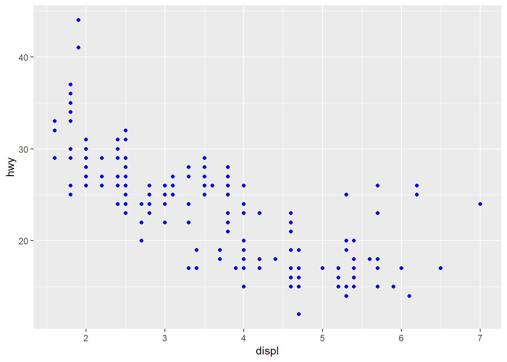
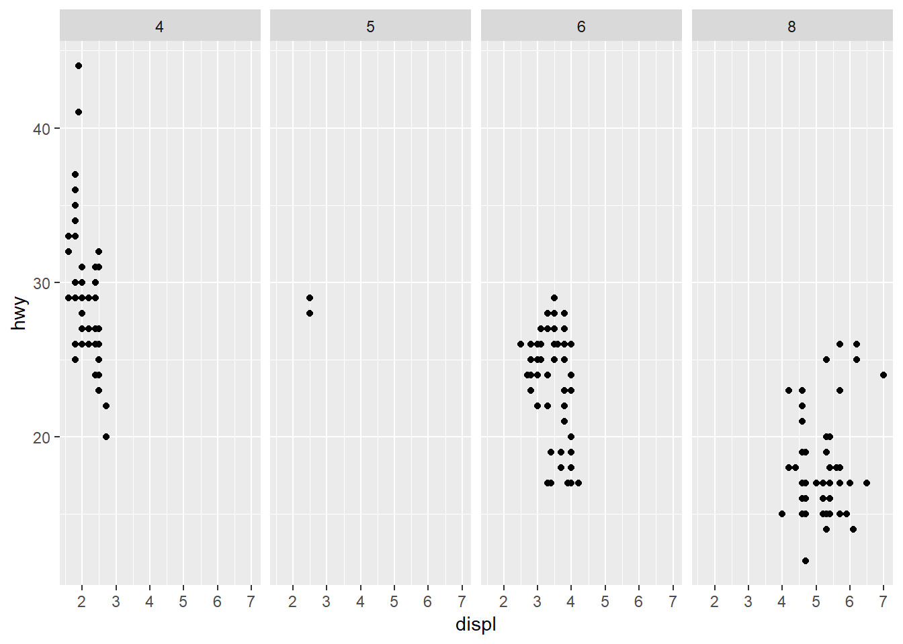
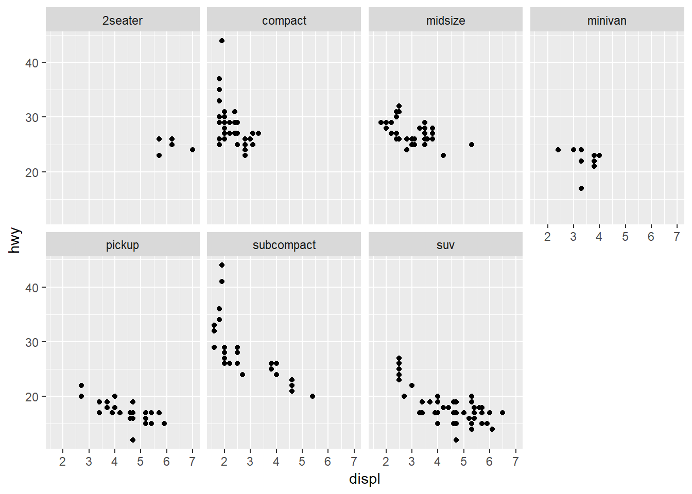
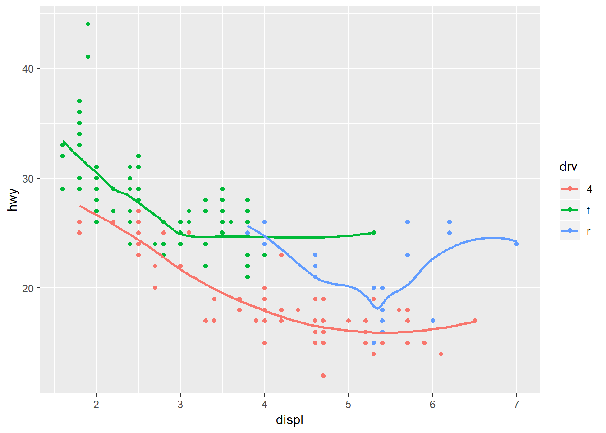

Chapter 3 Data visualisation
3.1 Introduction
In Chapter 2. we installed a package called tidyverse. incase you haven’t.
Now for data visualization, we shall be using ggplot which is a member of tidyverse we just installed.
Building graphs with ggplot ->Point to note (Template for using ggplot) ->DATA is the dataset you will be using ->MAPPINGS - mapping collection of the graph ggplot(data = ) +
3.2 3.2.4 Exercises-ggplot
Question 1 Run ggplot(data = mpg). What do you see?
ggplot(data = mpg) displays an empty graph
Question 2 How many rows are in mpg? How many columns?
#Another alternative
glimpse(mpg)## Observations: 234
## Variables: 11
## $ manufacturer <chr> "audi", "audi", "audi", "audi", "audi", "audi", "...
## $ model <chr> "a4", "a4", "a4", "a4", "a4", "a4", "a4", "a4 qua...
## $ displ <dbl> 1.8, 1.8, 2.0, 2.0, 2.8, 2.8, 3.1, 1.8, 1.8, 2.0,...
## $ year <int> 1999, 1999, 2008, 2008, 1999, 1999, 2008, 1999, 1...
## $ cyl <int> 4, 4, 4, 4, 6, 6, 6, 4, 4, 4, 4, 6, 6, 6, 6, 6, 6...
## $ trans <chr> "auto(l5)", "manual(m5)", "manual(m6)", "auto(av)...
## $ drv <chr> "f", "f", "f", "f", "f", "f", "f", "4", "4", "4",...
## $ cty <int> 18, 21, 20, 21, 16, 18, 18, 18, 16, 20, 19, 15, 1...
## $ hwy <int> 29, 29, 31, 30, 26, 26, 27, 26, 25, 28, 27, 25, 2...
## $ fl <chr> "p", "p", "p", "p", "p", "p", "p", "p", "p", "p",...
## $ class <chr> "compact", "compact", "compact", "compact", "comp...#Another alternative
str(mpg) #gives a detailed description of mpg dataset 234 rows , 11 columns## Classes 'tbl_df', 'tbl' and 'data.frame': 234 obs. of 11 variables:
## $ manufacturer: chr "audi" "audi" "audi" "audi" ...
## $ model : chr "a4" "a4" "a4" "a4" ...
## $ displ : num 1.8 1.8 2 2 2.8 2.8 3.1 1.8 1.8 2 ...
## $ year : int 1999 1999 2008 2008 1999 1999 2008 1999 1999 2008 ...
## $ cyl : int 4 4 4 4 6 6 6 4 4 4 ...
## $ trans : chr "auto(l5)" "manual(m5)" "manual(m6)" "auto(av)" ...
## $ drv : chr "f" "f" "f" "f" ...
## $ cty : int 18 21 20 21 16 18 18 18 16 20 ...
## $ hwy : int 29 29 31 30 26 26 27 26 25 28 ...
## $ fl : chr "p" "p" "p" "p" ...
## $ class : chr "compact" "compact" "compact" "compact" ...#Another way is by using dimension objects nrow() and ncol()
nrow(mpg) #gives number of rows## [1] 234ncol(mpg) #gives number of columns## [1] 11Question 3 What does the drv variable describe? Read the help for ?mpg to find out. Answer : Drv variable is a categorical/discrete variable that categorizes cars into front-wheels, rear-wheels, or four-wheel drive that is : f = front-wheel drive, r = rear wheel drive, 4 = 4wd
Question 4 Make a scatterplot of hwy vs cyl.
#The first argument in ggplot describe dataset we are using
#Use + sign to add more arguments
ggplot(data = mpg) + geom_point(mapping = aes(x = hwy , y = cyl)) Question 5 What happens if you make a scatterplot of class vs drv? Why is the plot not useful?
Question 5 What happens if you make a scatterplot of class vs drv? Why is the plot not useful?
ggplot(data = mpg) + geom_point(aes(x = class , y = drv)) Answer : The two Variables are both categorical variables , why not useful , having two categorical variables usually take on one of a limited, and usually fixed number of possible values in (x,y) to be displayed , thus omiting others.
Answer : The two Variables are both categorical variables , why not useful , having two categorical variables usually take on one of a limited, and usually fixed number of possible values in (x,y) to be displayed , thus omiting others.
3.3 3.3.1-Exercises-Aesthetic mappings
To use ggplot for this exercise , load tidyverse (which has ggplot ) as follows
library(tidyverse)Question 1 What’s gone wrong with this code? Why are the points not blue?
ggplot(data = mpg) +
geom_point(mapping = aes(x = displ, y = hwy, color = "blue"))Answer : Since blue is included in the mapping arguement , blue is treated as a variables to be mapped to an aesthetic, just like hwy or displ. The correct way would be to set the color as an argument of the geom_point method.
ggplot(data = mpg) +
geom_point(mapping = aes(x = displ, y = hwy) , color = "blue") Question 2 Which variables in mpg are categorical? Which variables are continuous? (Hint: type ?mpg to read the documentation for the dataset). How can you see this information when you run mpg?
str(mpg)## Classes 'tbl_df', 'tbl' and 'data.frame': 234 obs. of 11 variables:
## $ manufacturer: chr "audi" "audi" "audi" "audi" ...
## $ model : chr "a4" "a4" "a4" "a4" ...
## $ displ : num 1.8 1.8 2 2 2.8 2.8 3.1 1.8 1.8 2 ...
## $ year : int 1999 1999 2008 2008 1999 1999 2008 1999 1999 2008 ...
## $ cyl : int 4 4 4 4 6 6 6 4 4 4 ...
## $ trans : chr "auto(l5)" "manual(m5)" "manual(m6)" "auto(av)" ...
## $ drv : chr "f" "f" "f" "f" ...
## $ cty : int 18 21 20 21 16 18 18 18 16 20 ...
## $ hwy : int 29 29 31 30 26 26 27 26 25 28 ...
## $ fl : chr "p" "p" "p" "p" ...
## $ class : chr "compact" "compact" "compact" "compact" ...Answer : Categorical variables are those of type chr while continous are those of type int/num
Question 3 Map a continuous variable to color, size, and shape. How do these aesthetics behave differently for categorical vs. continuous variables?
Answer Continous variable cannot be mapped to shape (shapes aren’t ordered)
POINT TO NOTE Shape can deal with a maximum of 6 discrete values because more than 6 becomes difficult to discriminate; you have 10. Consider specifying shapes manually if you must have them otherwise it will remove some of the rows.
Question 4 What happens if you map the same variable to multiple aesthetics?
ggplot(data = mpg) +
geom_point(mapping = aes(x = displ, y = hwy, size = cty, color = cty, alpha = cty))Answer : Not ideal, redudancy of the variable making it hard to analyze
Question 5 What does the stroke aesthetic do? What shapes does it work with? (Hint: use ?geom_point)
ggplot(data = mpg) +
geom_point(mapping = aes(x = displ, y = hwy , color = class ), shape = 1, stroke = 4)Answer : Stroke represents the border width size of the shape , the larger the number you represent for stroke, the larger it increases the border width
Question 6
What happens if you map an aesthetic to something other than a variable name, like aes(colour = displ < 5)? Note, you’ll also need to specify x and y.
ggplot(data = mpg) +
geom_point(mapping = aes(x = displ, y = hwy , color = class < 5 ), shape = 1, stroke = 4)Answer : This will display a graph mapped aganist boolean variables (True or False) That is, a different color or shape if observations are less than 5 verses a different color or shape if the observations are more than 5.
3.4 3.5.1 Exercises -Facelets
library(tidyverse)Question 1 What happens if you facet on a continuous variable? Let’s try by example where displ is a continous variable
ggplot(data = mpg) +
geom_point(mapping = aes(x = cyl, y = hwy)) +
facet_wrap(~ displ)Answer : Total insane.makes no sense.!! A facelet for each value, suppose we have a million values.(I bet it would crash R)
Question 2 What do the empty cells in plot with facet_grid(drv ~ cyl) mean? How do they relate to this plot?
ggplot(data = mpg) +
geom_point(mapping = aes(x = drv, y = cyl))ggplot(data = mpg) +
geom_point(mapping = aes(x = drv, y = cyl)) +
facet_grid(drv ~ cyl)Answer : rear wheel drive Empty cells imply no observation for the variable combination. From our graph above there are no vehicles with 5 cylinders also no vehicles with 5 cylinders that are also 4 wheel drive vehicles. The two grapghs are similar only that facet appears to be showing a single data point.
Question 3 What plots does the following code make? What does . do?
ggplot(data = mpg) +
geom_point(mapping = aes(x = displ, y = hwy)) +
facet_grid(drv ~ .)ggplot(data = mpg) +
geom_point(mapping = aes(x = displ, y = hwy)) +
facet_grid(. ~ cyl) For the first graph , (~drv .) , .imply plot without column attribute thus showing a graph with row plots whileas (. ~cyl) implying plot without row attribute thus showing a graph with column plots. .is used in showing only one dimension (omiting row or a column)
Question 4. Take the first faceted plot in this section:
ggplot(data = mpg) +
geom_point(mapping = aes(x = displ, y = hwy)) +
facet_wrap(~ class, nrow = 2) What are the advantages to using faceting instead of the colour aesthetic? -> Faceting divides the data into separate smaller plots making it easier visualizing within each facelet.For colour aesthetic is not ideal for large dataset as colors may start overlapping, making it hard visualizing.
What are the disadvantages? -> Since graph isnt continous, it would be difficult to make an overall analysis especilally if dealing with large dataset
How might the balance change if you had a larger dataset? ->For large dataset, one graph that is not sub-grouped would be the best over having facets especially in doing overall data analysis .
Question 5 Read ?facet_wrap. What does nrow do? What does ncol do? What other options control the layout of the individual panels? Why doesn’t facet_grid() have nrow and ncol arguments?
Question 5 When using facet_grid() you should usually put the variable with more unique levels in the columns. Why? ->space.View space is more vertically than it is horizontally , since data will compress to fit in the screen, making it harder to view.
3.5 3.6.1 Exercises(Geometric objects)
1.What geom would you use to draw a line chart? A boxplot? A histogram? An area chart? >bar charts use bar geoms, line charts use line geoms, boxplots use boxplot geoms, and so on. Scatterplots they use the point geom. >Line chart - geom_line() >Boxplot - geom_boxplot() >Histogram - geom_histogram() >Area chart - geom_area()
2.Run this code in your head and predict what the output will look like. Then, run the code in R and check your predictions.
library(tidyverse)
ggplot(data = mpg, mapping = aes(x = displ, y = hwy, color = drv)) +
geom_point() +
geom_smooth(se = FALSE)## `geom_smooth()` using method = 'loess' and formula 'y ~ x' >point : Smoothing a plot refers to the act of making it more round(removing the peaks and troughs to show trend). >using method = loess and formula y~x implies you are using a regression method called “LOcal regrESSion” and with a formula regressing y (hwy) on x (displ). >se refers to standard errors, this is the difference between the actual value of y and the predicted value of y(y-hat). >For se = T, the range (shaded region) will be plotted alongside the smoothed plot and vice versa if False
Question 3 What does show.legend = FALSE do? What happens if you remove it? Why do you think I used it earlier in the chapter?
Question 4 What does the confidence interval (The gray area) around the smoothing line. if set true, if set false it does not show.
Question 5 Will these two graphs look different? Why/why not?
ggplot(data = mpg, mapping = aes(x = displ, y = hwy)) +
geom_point() +
geom_smooth()## `geom_smooth()` using method = 'loess' and formula 'y ~ x'
ggplot() +
geom_point(data = mpg, mapping = aes(x = displ, y = hwy)) +
geom_smooth(data = mpg, mapping = aes(x = displ, y = hwy))## `geom_smooth()` using method = 'loess' and formula 'y ~ x'>No they are using the same data and mapping settings. >First graph ,the layers inherit the configuration from ggplot. and the second graph similar layers are assigned directly
Question 6 Recreate the R code necessary to generate the following graphs.
library(tidyverse)
ggplot(mpg, aes(displ , hwy)) +
geom_point() +
geom_smooth(data = mpg, mapping = aes(x = displ, y = hwy)) +
facet_wrap(~class) # coherces to intervals## `geom_smooth()` using method = 'loess' and formula 'y ~ x'## Warning in simpleLoess(y, x, w, span, degree = degree, parametric =
## parametric, : span too small. fewer data values than degrees of freedom.## Warning in simpleLoess(y, x, w, span, degree = degree, parametric =
## parametric, : pseudoinverse used at 5.6935## Warning in simpleLoess(y, x, w, span, degree = degree, parametric =
## parametric, : neighborhood radius 0.5065## Warning in simpleLoess(y, x, w, span, degree = degree, parametric =
## parametric, : reciprocal condition number 0## Warning in simpleLoess(y, x, w, span, degree = degree, parametric =
## parametric, : There are other near singularities as well. 0.65044## Warning in predLoess(object$y, object$x, newx = if
## (is.null(newdata)) object$x else if (is.data.frame(newdata))
## as.matrix(model.frame(delete.response(terms(object)), : span too small.
## fewer data values than degrees of freedom.## Warning in predLoess(object$y, object$x, newx = if
## (is.null(newdata)) object$x else if (is.data.frame(newdata))
## as.matrix(model.frame(delete.response(terms(object)), : pseudoinverse used
## at 5.6935## Warning in predLoess(object$y, object$x, newx = if
## (is.null(newdata)) object$x else if (is.data.frame(newdata))
## as.matrix(model.frame(delete.response(terms(object)), : neighborhood radius
## 0.5065## Warning in predLoess(object$y, object$x, newx = if
## (is.null(newdata)) object$x else if (is.data.frame(newdata))
## as.matrix(model.frame(delete.response(terms(object)), : reciprocal
## condition number 0## Warning in predLoess(object$y, object$x, newx = if
## (is.null(newdata)) object$x else if (is.data.frame(newdata))
## as.matrix(model.frame(delete.response(terms(object)), : There are other
## near singularities as well. 0.65044## Warning in simpleLoess(y, x, w, span, degree = degree, parametric =
## parametric, : pseudoinverse used at 4.008## Warning in simpleLoess(y, x, w, span, degree = degree, parametric =
## parametric, : neighborhood radius 0.708## Warning in simpleLoess(y, x, w, span, degree = degree, parametric =
## parametric, : reciprocal condition number 0## Warning in simpleLoess(y, x, w, span, degree = degree, parametric =
## parametric, : There are other near singularities as well. 0.25## Warning in predLoess(object$y, object$x, newx = if
## (is.null(newdata)) object$x else if (is.data.frame(newdata))
## as.matrix(model.frame(delete.response(terms(object)), : pseudoinverse used
## at 4.008## Warning in predLoess(object$y, object$x, newx = if
## (is.null(newdata)) object$x else if (is.data.frame(newdata))
## as.matrix(model.frame(delete.response(terms(object)), : neighborhood radius
## 0.708## Warning in predLoess(object$y, object$x, newx = if
## (is.null(newdata)) object$x else if (is.data.frame(newdata))
## as.matrix(model.frame(delete.response(terms(object)), : reciprocal
## condition number 0## Warning in predLoess(object$y, object$x, newx = if
## (is.null(newdata)) object$x else if (is.data.frame(newdata))
## as.matrix(model.frame(delete.response(terms(object)), : There are other
## near singularities as well. 0.25Xie, Yihui. 2015. Dynamic Documents with R and Knitr. 2nd ed. Boca Raton, Florida: Chapman; Hall/CRC. http://yihui.name/knitr/.
———. 2018. Bookdown: Authoring Books and Technical Documents with R Markdown. https://CRAN.R-project.org/package=bookdown.